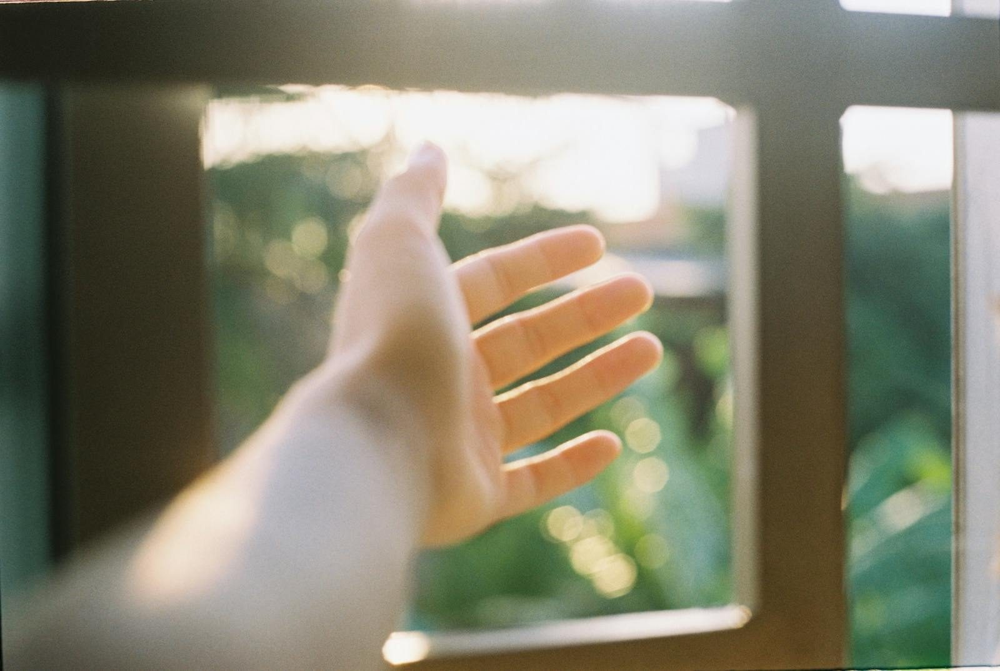
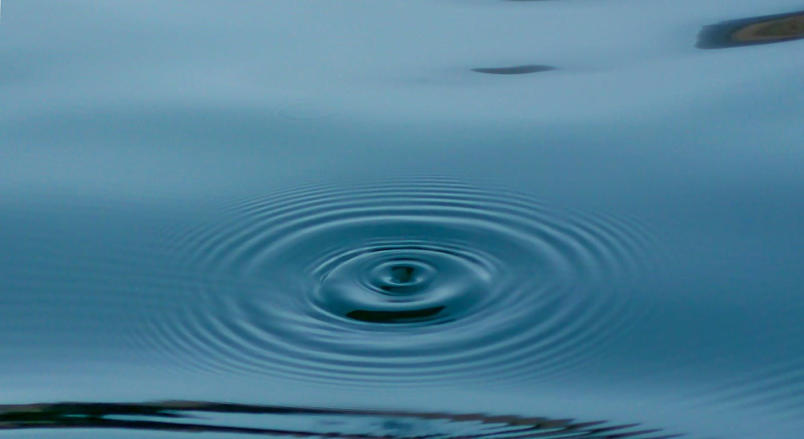

B1 — A Word to My Kids PROPOSED
Vol 1 · A Word to My Kids at the End · image-008.jpeg (man + child on a swing)
Current (low-res)
Proposed — free (Pexels)
SWAP → a parent holding a small child's hand, autumn light (no faces)
B2 — Wound & False Self NEEDS YOUR STEER
Vol 2 · Exploration 2a — Wound and the False Self · image-011.jpeg (a face half-covered by a written-on mask)
Current
Concept options
• armor / a breastplate (the defended self — my pick)
• a plain mask (set down, not festive)
• a cracked porcelain/statue face (the facade cracking)
• typeset / just remove
Tell me and I'll source a clean one.
B3 — Confession & Restoration PROPOSED
Vol 2 · Exploration 4 — Confession and Restoration · image-013.jpeg (woman + "confession/repentance/restoration" text)
Current (text-over-photo)
Proposed — free (Pexels)

SWAP → an open hand toward window light (reaching for grace). A bit soft/dreamy — I can find a crisper one, or use light-through-clouds, if you prefer.
B4 — Prayer as Resonance PROPOSED
Vol 1 · Exploration 8 — Prayer as Resonance · image-012.jpeg (hand cupped to an ear)
Current
Proposed — free (Pexels)

SWAP → concentric ripples on water (resonance / a spreading waveform); also avoids repeating the ear used in A1